71 of 132 losses (53.8%) are time_bleed (held ≥24 bars / 12h before stopping out) — the opposite pattern from S1, where entries fail fast or work. S2 is a mean-reversion strategy: it drags losers rather than failing instantly (only 15.9% immediate_loss).
Closed trades
224
2024-01-04 → 2026-07-08
Win rate
41.07%
95% CI 34.83–47.61%
Profit factor
1.535
Net $7,112.40
Max drawdown
$-2,413.89
Max 9 consecutive losses
Key findings
WR 41.07% with PF 1.535 — a left-side reversal strategy compensates for a sub-50% win rate with a larger average win than average loss (avg PnL $31.75/trade).
4H-bearish counter-trend WR 38.2% vs 42.96% aligned (4.76pp gap) — far narrower than S1 V3.4's 9.6pp gap, consistent with S2 being designed to fade the trend rather than follow it.
V1.9 failed OOS validation and is not the active formal S2 version (V3.2 is, confirmed 2026-07-27). This report is historical/comparison context; see RS-XAUUSD-20260727-007 for the current version and RS-XAUUSD-20260727-008 for the version gap.
Impact on practice
No active policy change. Research/publication only for this study.
Performance
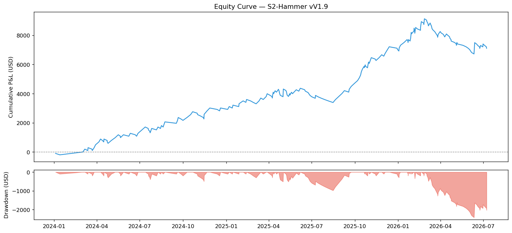
Fail Pattern Breakdown
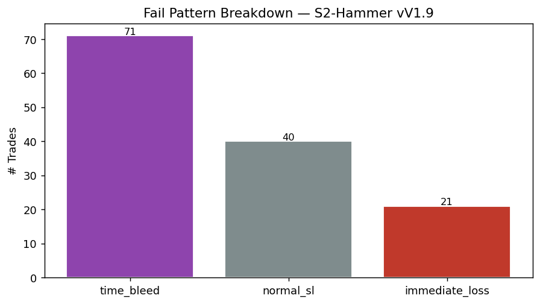
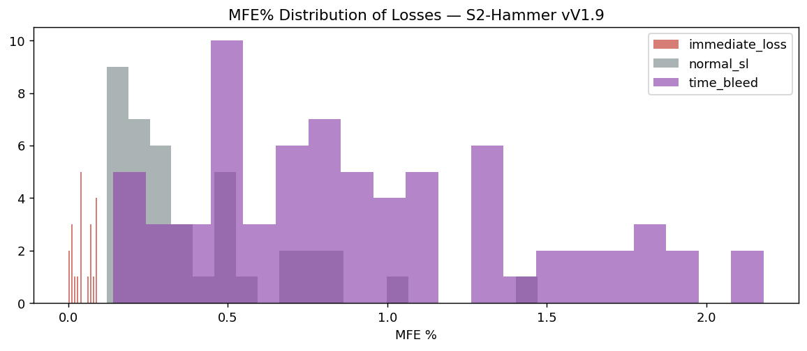
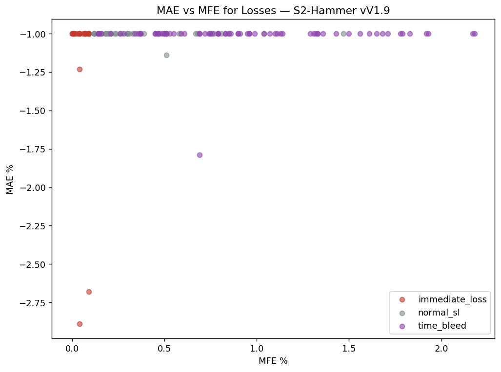
Fail-Type Breakdown
| fail_type | count | % |
|---|---|---|
| time_bleed | 71 | 53.8% |
| normal_sl | 40 | 30.3% |
| immediate_loss | 21 | 15.9% |
30-Minute Entry-Slot Timing
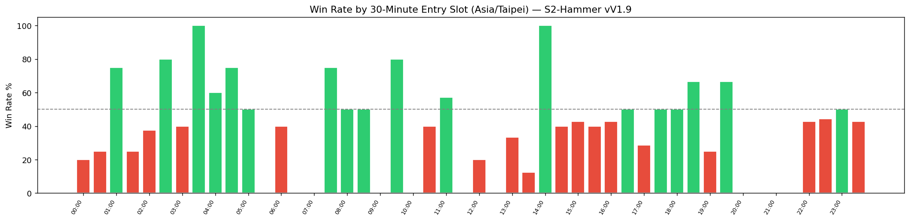
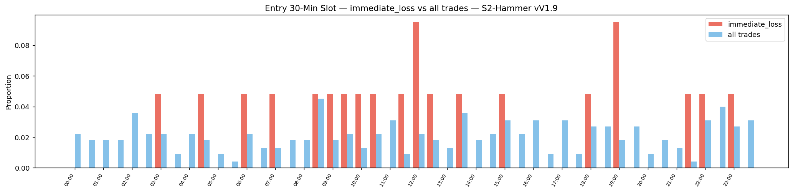
30-minute entry timing
Asia/Taipei bar-start time. All 48 slots are shown; low-n cells (n<5) score 0 and are marked low-n. Rank scores range −2…+2, never as entry gates.
| 30m slot | n | WR | 95% CI | PF | Net USD | Rank score |
|---|---|---|---|---|---|---|
| 00:00 | 5 | 20.0% | 3.62–62.45% | 0.5 | -196.01 | — |
| 00:30 | 4 | 25.0% | 4.56–69.94% | 0.667 | -96.72 | — |
| 01:00 | 4 | 75.0% | 30.06–95.44% | 7.467 | 727.89 | — |
| 01:30 | 4 | 25.0% | 4.56–69.94% | 0.666 | -98.88 | — |
| 02:00 | 8 | 37.5% | 13.68–69.43% | 1.863 | 426.28 | — |
| 02:30 | 5 | 80.0% | 37.55–96.38% | 8.031 | 690.34 | — |
| 03:00 | 5 | 40.0% | 11.76–76.93% | 1.262 | 83.06 | — |
| 03:30 | 2 | 100.0% | 34.24–100.0% | — | 397.09 | — |
| 04:00 | 5 | 60.0% | 23.07–88.24% | 3.124 | 418.23 | — |
| 04:30 | 4 | 75.0% | 30.06–95.44% | 6.059 | 495.16 | — |
| 05:00 | 2 | 50.0% | 9.45–90.55% | 1.997 | 98.93 | — |
| 05:30 | 1 | 0.0% | 0.0–79.35% | 0.0 | -96.55 | — |
| 06:00 | 5 | 40.0% | 11.76–76.93% | 1.349 | 102.65 | — |
| 06:30 | 3 | 0.0% | 0.0–56.15% | 0.0 | -295.49 | — |
| 07:00 | 3 | 0.0% | 0.0–56.15% | 0.0 | -291.60 | — |
| 07:30 | 4 | 75.0% | 30.06–95.44% | 7.95 | 692.80 | — |
| 08:00 | 4 | 50.0% | 15.0–85.0% | 1.977 | 194.78 | — |
| 08:30 | 10 | 50.0% | 23.66–76.34% | 1.992 | 488.90 | — |
| 09:00 | 4 | 0.0% | 0.0–48.99% | 0.0 | -392.43 | — |
| 09:30 | 5 | 80.0% | 37.55–96.38% | 9.144 | 793.82 | — |
| 10:00 | 3 | 0.0% | 0.0–56.15% | 0.0 | -294.08 | — |
| 10:30 | 5 | 40.0% | 11.76–76.93% | 0.87 | -58.42 | — |
| 11:00 | 7 | 57.14% | 25.05–84.18% | 3.19 | 641.54 | — |
| 11:30 | 2 | 0.0% | 0.0–65.76% | 0.0 | -199.17 | — |
| 12:00 | 5 | 20.0% | 3.62–62.45% | 0.503 | -196.74 | — |
| 12:30 | 4 | 0.0% | 0.0–48.99% | 0.0 | -390.28 | — |
| 13:00 | 3 | 33.33% | 6.15–79.23% | 1.036 | 6.88 | — |
| 13:30 | 8 | 12.5% | 2.24–47.09% | 0.278 | -498.69 | — |
| 14:00 | 4 | 100.0% | 51.01–100.0% | — | 861.76 | — |
| 14:30 | 5 | 40.0% | 11.76–76.93% | 1.354 | 103.72 | — |
| 15:00 | 7 | 42.86% | 15.82–74.95% | 1.665 | 324.76 | — |
| 15:30 | 5 | 40.0% | 11.76–76.93% | 1.356 | 102.97 | — |
| 16:00 | 7 | 42.86% | 15.82–74.95% | 1.519 | 201.32 | — |
| 16:30 | 2 | 50.0% | 9.45–90.55% | 2.01 | 100.43 | — |
| 17:00 | 7 | 28.57% | 8.22–64.11% | 0.805 | -95.83 | — |
| 17:30 | 2 | 50.0% | 9.45–90.55% | 1.993 | 97.99 | — |
| 18:00 | 6 | 50.0% | 18.76–81.24% | 2.0 | 295.65 | — |
| 18:30 | 6 | 66.67% | 30.0–90.32% | 4.587 | 708.93 | — |
| 19:00 | 4 | 25.0% | 4.56–69.94% | 0.662 | -99.63 | — |
| 19:30 | 6 | 66.67% | 30.0–90.32% | 6.288 | 1,031.42 | — |
| 20:00 | 2 | 0.0% | 0.0–65.76% | 0.0 | -195.61 | — |
| 20:30 | 4 | 0.0% | 0.0–48.99% | 0.0 | -391.47 | — |
| 21:00 | 3 | 0.0% | 0.0–56.15% | 0.0 | -292.91 | — |
| 21:30 | 1 | 0.0% | 0.0–79.35% | 0.0 | -99.77 | — |
| 22:00 | 7 | 42.86% | 15.82–74.95% | 1.491 | 193.69 | — |
| 22:30 | 9 | 44.44% | 18.88–73.34% | 2.008 | 490.27 | — |
| 23:00 | 6 | 50.0% | 18.76–81.24% | 2.151 | 423.00 | — |
| 23:30 | 7 | 42.86% | 15.82–74.95% | 1.509 | 198.42 | — |
Broad session summary
Descriptive only. The 30-minute entry-slot view above is the primary evidence.
| Context | n | WR | PF | Net USD |
|---|---|---|---|---|
| asia | 76 | 38.16% | 1.307 | 1,462.79 |
| europe | 54 | 44.44% | 1.815 | 2,472.40 |
| overnight | 48 | 50.0% | 2.23 | 2,948.71 |
| us | 46 | 32.61% | 1.074 | 228.50 |
Pre-Entry Context — Immediate Loss
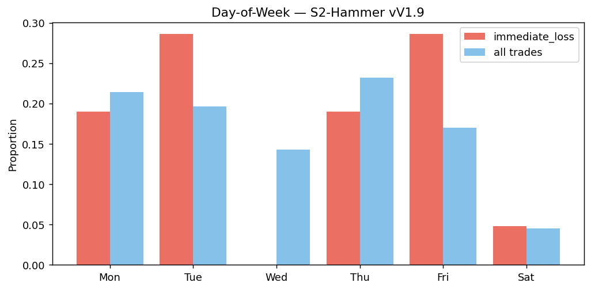
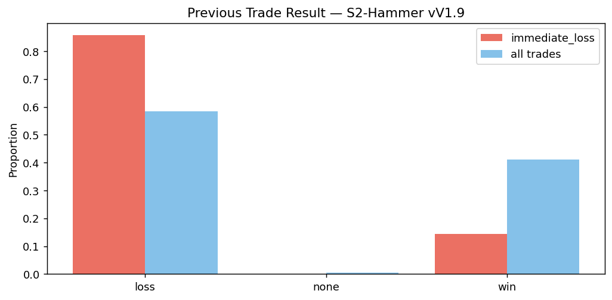
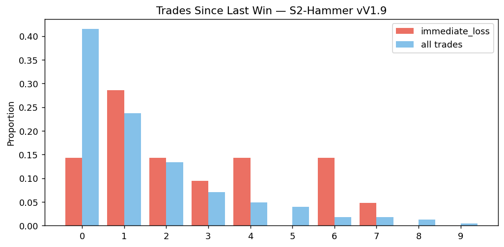
K-Bar Features at Entry
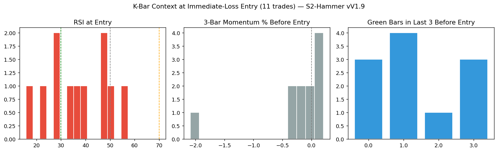
K-bar coverage: 11/21 immediate_loss trades (52.4%). Partial coverage — not a full-sample result.
Bollinger Band Position
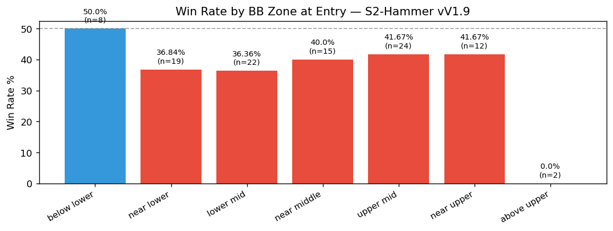
BB zone
| Context | n | WR | PF | Net USD |
|---|---|---|---|---|
| below_lower | 8 | 50.0% | 1.546 | 346.89 |
| near_lower | 19 | 36.84% | 1.718 | 840.58 |
| lower_mid | 22 | 36.36% | 1.437 | 600.04 |
| near_middle | 15 | 40.0% | 1.572 | 502.05 |
| upper_mid | 24 | 41.67% | 1.445 | 604.33 |
| near_upper | 12 | 41.67% | 1.279 | 212.49 |
| above_upper | 2 | 0.0% | 0.0 | -199.37 |
DXY Context
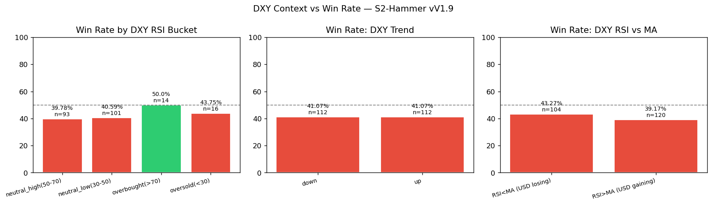
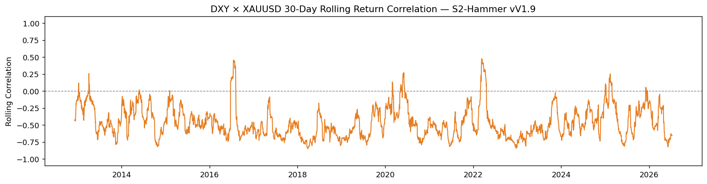
DXY RSI bucket
| Context | n | WR | PF | Net USD |
|---|---|---|---|---|
| neutral_high(50-70) | 93 | 39.78% | 1.409 | 2,348.34 |
| neutral_low(30-50) | 101 | 40.59% | 1.517 | 3,095.93 |
| overbought(>70) | 14 | 50.0% | 2.485 | 1,015.29 |
| oversold(<30) | 16 | 43.75% | 1.74 | 652.84 |
DXY 1D trend
| Context | n | WR | PF | Net USD |
|---|---|---|---|---|
| down | 112 | 41.07% | 1.525 | 3,526.15 |
| up | 112 | 41.07% | 1.544 | 3,586.25 |
Avg 30-day rolling DXY–XAUUSD correlation: -0.46
Multi-Timeframe Alignment
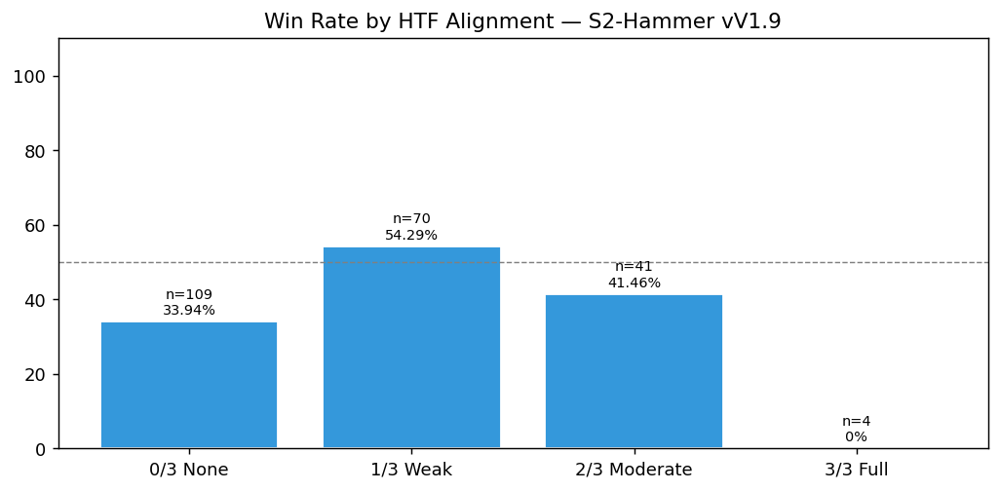
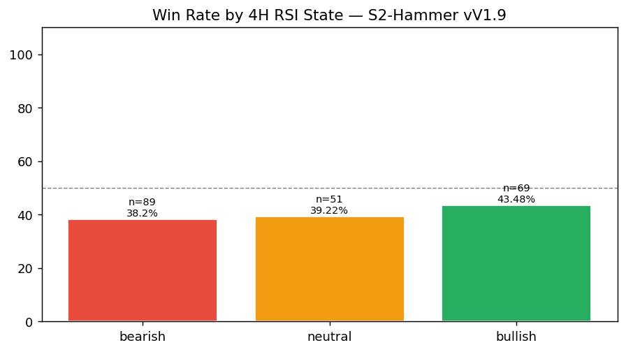
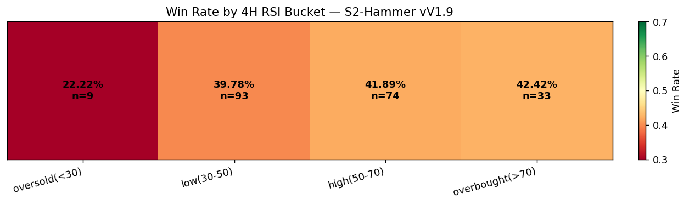
MTF HTF alignment
| Context | n | WR | PF | Net USD |
|---|---|---|---|---|
| 0/3 None | 109 | 33.94% | 1.128 | 943.77 |
| 1/3 Weak | 70 | 54.29% | 2.784 | 5,582.27 |
| 2/3 Moderate | 41 | 41.46% | 1.448 | 1,052.05 |
| 3/3 Full | 4 | 0.0% | 0.0 | -465.69 |
MTF 4H RSI state
| Context | n | WR | PF | Net USD |
|---|---|---|---|---|
| bearish | 89 | 38.2% | 1.422 | 2,336.57 |
| bullish | 69 | 43.48% | 1.641 | 2,496.04 |
| neutral | 51 | 39.22% | 1.438 | 1,393.69 |
Hold Time & Streaks
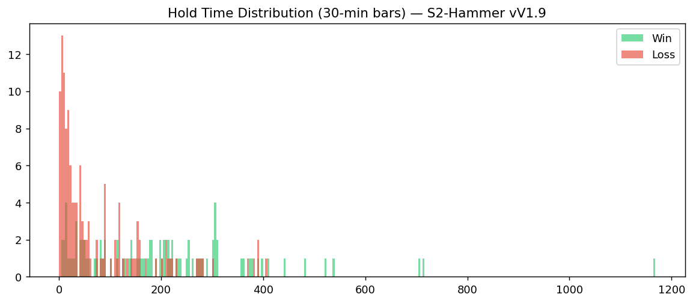
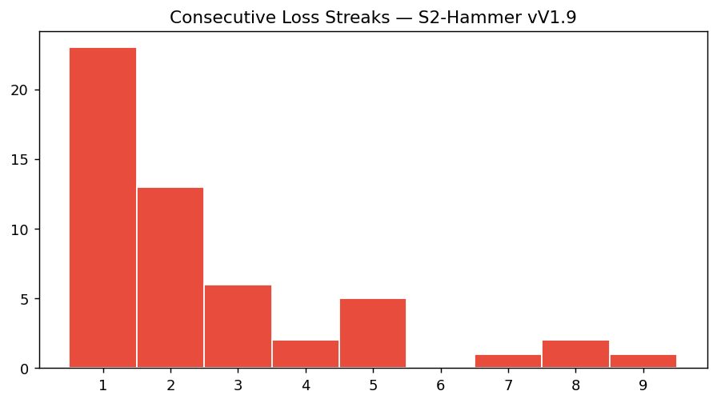
Method and evidence boundary
This is a full-coverage fail-pattern reproduction, not a new hypothesis test; it exists as the V1.9 half of the RS-XAUUSD-20260727-008 gap report and as historical context for the S2 evolution.
Raw CSV and private decision conversations remain in trading-private. This public page contains reviewed aggregate results, charts, and the reproducible method only.